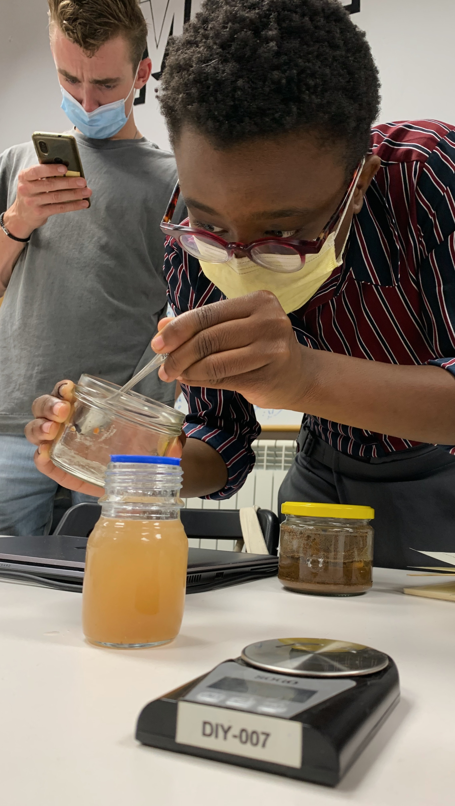
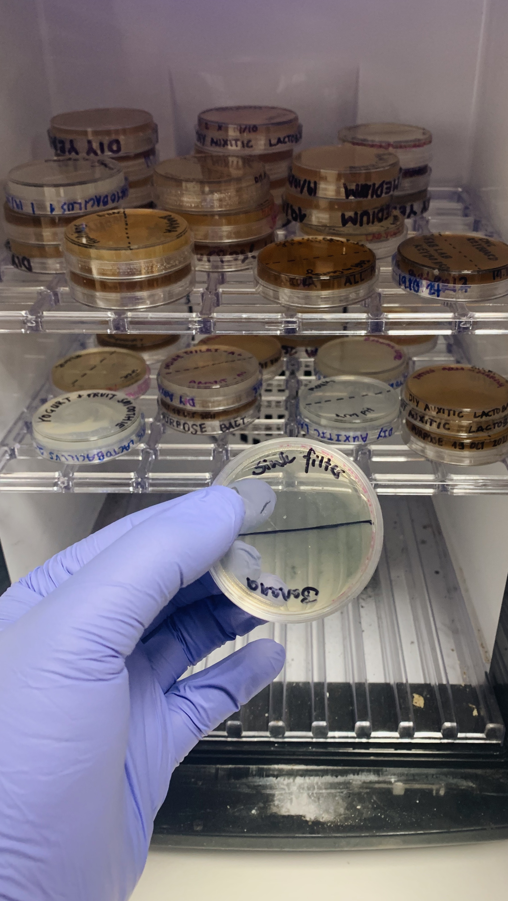
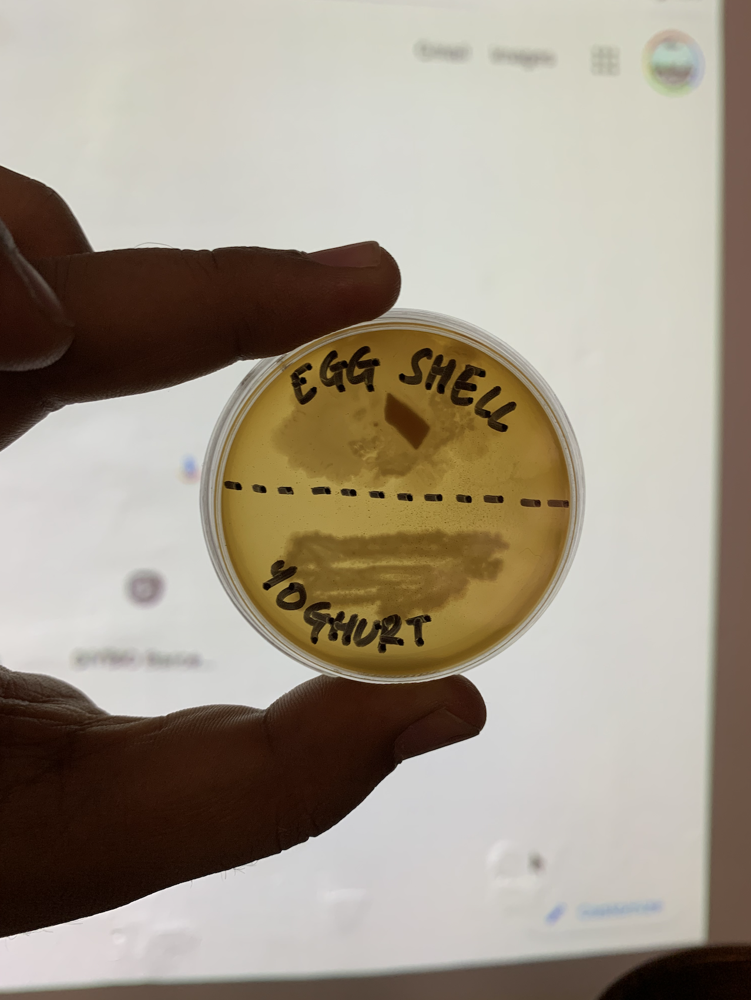
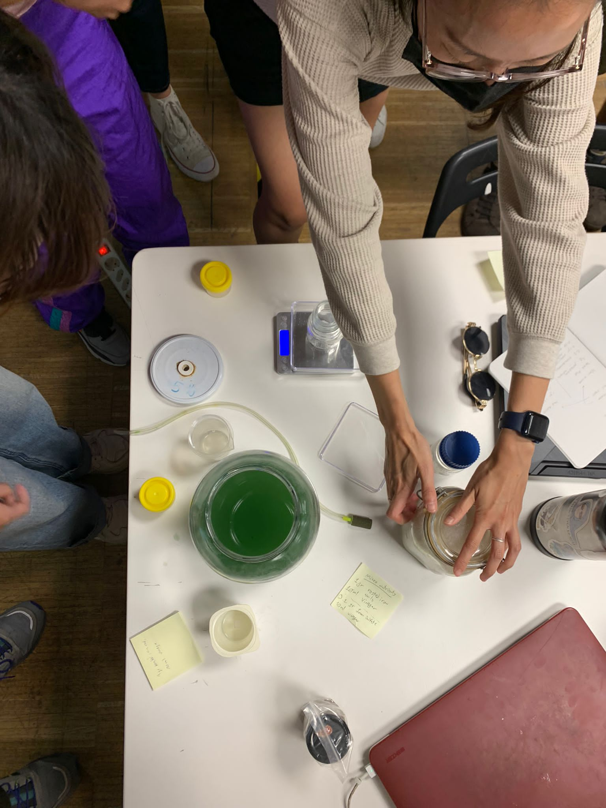
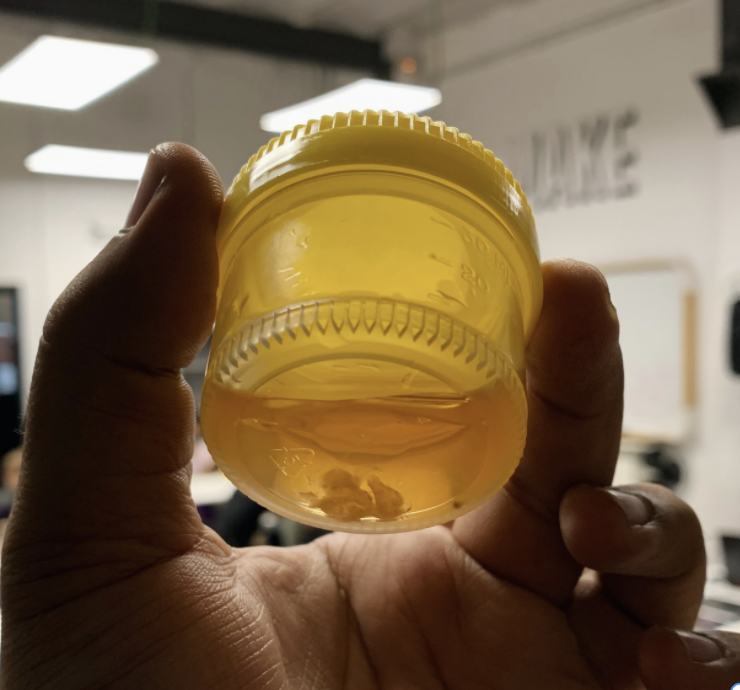
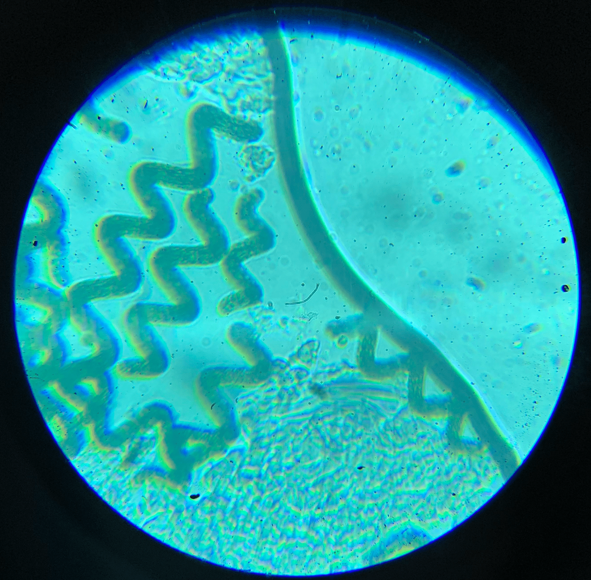

Photograph clicked at the MDEF room, IaaC Barcelona
TERM 1
Bio and Agri Zero
Back in the senior year for my school, I had studied Science and specifically Biology as my major, but it always felt like I didn't invest enough time and effort to appreciate it. It was only a few years back that I actively started making science a part of my practice, as a lens and mode of research. This module reminded me how exciting, introspective, transformative and political, Science could be.
Bacterial Mediums
The module began with exploration and introspection through basic building blocks of cellular life and the concept of ‘Cellular Existence’. To understand how biology and cellular life is embedded way deeper into our lives than we think, we prepared bacterial mediums to grow our own bacterias. Many samples from surfaces, places and even dustbins around us were collected to study. My hypothesis for these slides was an intriguing question that I always had while discarding the organic waste from my kitchen:
Yogurt and eggs are the two top consumables in my house.
Which one of those two causes the lingering smell in the organic waste bag before disposal?
For the study, an auxetic medium using tomato juice, bovril and agar was prepared. This medium is an ideal space for Lactobacillus, which is a genus of Gram-positive, aerotolerant anaerobes or microaerophilic, rod-shaped, non-spore-forming bacteria. This bacteria is found in many things we consume but most abundantly in yogurt. After letting this medium rest under a suitable temperature and humidity for 5 days, the colony formations were observed. The colony growth around the egg-shell probe was much more fragmented and filamentous, while the one with the yogurt was more situated on the swipe.

Various other types of mediums to study Spirulina farming and Kombucha scoby were also explored. All these studies gave us an insight into democratizing biology and making it open-source. These discussions led us further in understanding synthetic biology and how biologically optimized design could just save the planet. Various processes and advancements like Polymerase Chain Reaction, CRISPR-Cas9 and VetBact were discussed and studied.
